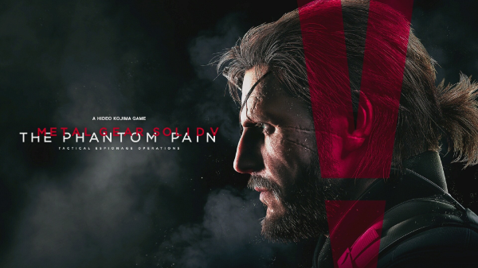
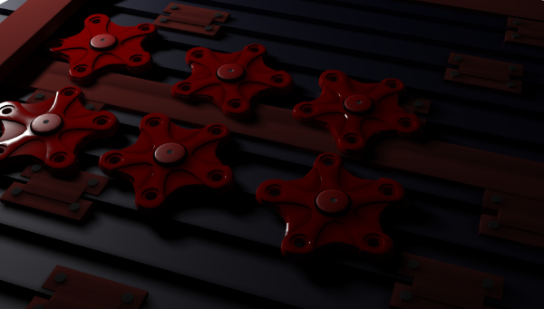

特徴：「敵を倒して進むのではなく、いかに敵に見つからないように進むか」という、今日のステルスゲームのスタイルを確立した作品である。
今まで本気でプレイしてきたメタルギア作品は、「ファントムペイン（以下、「PP」と記載）」、「ピースウォーカー（以下、「PW」と記載）」の2作だ。今回はPWに焦点を当てよう。
私の中でどちらが印象強いかと聞かれると圧倒的にPWだろう。PWではAIを搭載した兵器がいくつか登場する。これらのAI兵器はそれぞれ独特な特性がありそれらを見極め、武器を選び、対策を練らないとゲームクリアには近づけない。また、最終ボス戦のピースウォーカーは、核弾頭ミサイルを搭載していてその発射を阻止するという内容だ。
またPWには変わった武器もたくさんある。今回はたくさんの中から一つだけピックアップしてご紹介しよう。

この武器は「人間パチンコ」。この武器は、一人でプレイしているときには使えない…この人間パチンコは武器の名前通り人間をパチンコの玉にして打ってしまうという何とも恐ろしい武器なのだ。そのため通信プレイ時にしか使えないというユニークアイテムだ。
特徴：昨今の大人数対戦時代に珍しい「少人数戦」がコンセプトのゲーム。全てのルールにおいて「リスポーン無し（復活しない）」という玄人向けのシステム
最近ドはまりしていたレインボーシックスシージ（以下、「R6S」と記載）という作品。魅力についてご紹介。
このゲームでは、死んだ後にもチームに貢献することができる。復活できないゲーム性なので、死んでしまったら確かにチームにとって痛手、それでも「マップに設置された監視カメラ」や「ドローンカメラ」を見ることができる。そしてそれらを駆使し味方のサポートができる。ある意味では死んだプレイヤーは敵にとって脅威となる。
また、R6Sにはたくさんのキャラクターが存在する。その数なんと46体。その46体それぞれが違った能力や特殊な武器を持っており、キャラ同士での相性や駆け引きがこのゲームの特徴ともいえる。（R6Sではキャラクターのことを「オペレーター」と呼ぶ。）
このゲームにはいろんな国の様々な架空の特殊部隊などが存在する。そんな中から今回は人のオペレーター「HIBANA」をご紹介しよう。
このHIBANAは40口径のランチャー「X-KAIROS」を携えて、危険区域への突入を行うアタッカー。この印象的な武器は、遠距離から起爆可能なペレットを放つことが可能だ。
このペレットを壁に撃ち込み起爆することによってこのように火とも通れるような穴をあけることができるのだ。